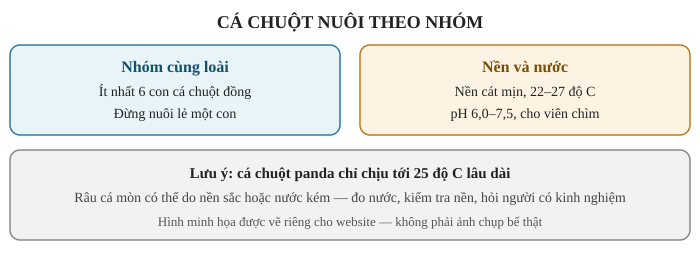

Cá chuột và cá dọn đáy cho bể cộng đồng: nuôi theo nhóm, nền cát và thức ăn chìm
Tác giả: Ruler
Tầng đáy là tầng bị bỏ quên nhiều nhất trong bể cộng đồng. Người mới thường chọn cá tầng mặt và tầng giữa rất kỹ, rồi mua một hai con cá đáy với suy nghĩ "mua về cho nó dọn bể". Vài tuần sau, cá đáy trốn suốt ngày, râu ngắn dần, bụng lép lại, rồi chết mà người nuôi không hiểu vì sao. Bài này viết riêng về cá sống ở tầng đáy, lấy cá chuột làm trung tâm, kèm cá chuột panda và cá oto làm hai trường hợp đặc biệt. Bài không viết về cá dọn bể lớn, cá da trơn lớn hay cá ăn rêu lớn, vì nhóm đó cần bể lớn hơn nhiều và không hợp với bể cộng đồng đầu tiên của người mới.
10 loại cá cảnh dễ nuôi nhất cho người mới đã giới thiệu cá chuột ngắn gọn trong bảng 10 loài, và Cho cá cảnh ăn đúng cách: bao nhiêu, mấy lần và lỗi thường gặp đã viết cá đáy cần thức ăn chìm riêng. Bài này đi sâu vào ba câu hỏi mà 10 loại cá cảnh dễ nuôi nhất cho người mới chưa trả lời hết: nuôi bao nhiêu con mới đủ, nền nào mới đúng, và cho ăn như thế nào để cá đáy thực sự được ăn. Chu trình nitơ chỉ được nhắc ngắn ở đây, vì đã giải thích đầy đủ ở Cách xử lý nước mới trước khi thả cá. Cách cho ăn chung chỉ được nhắc ngắn, vì đã giải thích đầy đủ ở Cho cá cảnh ăn đúng cách: bao nhiêu, mấy lần và lỗi thường gặp.
Hiểu lầm lớn nhất: cá đáy không phải là "cá dọn bể"
Seriously Fish viết rõ về cá chuột đồng: cá chuột là loài ăn tạp kiếm ăn ở đáy, chấp nhận hầu hết thức ăn chìm khô, cộng thêm thức ăn sống và đông lạnh nhỏ như trùn huyết, giun Tubifex. Trang này viết một câu mà người mới nên nhớ: trong bất kỳ trường hợp nào cũng không nên mong cá chuột sống sót nhờ thức ăn thừa của cá khác, hay dựa vào chúng để "dọn" bể cá. App-Aquatic viết tương tự, ngắn gọn hơn: cá chuột không phải là cá dọn dẹp, chúng sẽ không ăn hết đồ thừa của bạn. Chúng cần thức ăn chìm riêng, cho sau khi tắt đèn khi cá khác ít tranh ăn hơn, vì cá chuột được nuôi như đội dọn dẹp thường bị cho ăn thiếu.
Hiểu lầm này gây hại theo hai cách. Thứ nhất, cá đáy bị đói âm thầm: cá tầng giữa ăn hết cám nổi trước khi cám chìm xuống đáy, cá đáy chỉ nhặt được vụn thức ăn đã rã ra. Thứ hai, người nuôi tưởng bể đã sạch nên ít hút cặn đáy hơn, trong khi phân cá và thức ăn thừa vẫn tích tụ ở nền, làm nước bẩn ngay ở tầng cá đáy sống. Seriously Fish viết về cá chuột panda cũng nhắc điểm này: cá chuột panda nhạy cảm với nước xuống cấp, và sẽ mất râu nếu nuôi trong nền bẩn hay điều kiện kém. Vì vậy bài này dùng một nguyên tắc ngược lại với suy nghĩ thường gặp: cá đáy không làm bể sạch hơn, mà bể sạch mới làm cá đáy sống được.
Một điểm nữa cần hiểu: cá đáy không phải là một loài, mà là nhiều loài khác nhau, sống ở tầng đáy vì nhiều lý do khác nhau. Cá chuột sục tìm thức ăn trong cát. Cá oto bám vào lá cây và kính để gặm rêu mềm và màng sinh học. Hai cách sống này cần hai loại thức ăn khác nhau, hai loại nền khác nhau, và hai độ tuổi bể khác nhau. Mua cá đáy theo tên chung "cá dọn bể" mà không biết loài mình mua là loài nào, ăn gì và cần bể bao nhiêu lít, là cách nhanh nhất để mua nhầm.
Cá chuột đồng: loài cá đáy hợp nhất với bể cộng đồng đầu tiên

Cá chuột đồng, tên khoa học hiện tại là Osteogaster aenea, trước đây là Corydoras aeneus, là loài cá chuột phổ biến nhất trong cửa hàng. Seriously Fish viết loài này dài 75 mm tính tới gốc đuôi, cần mặt đáy 80 × 30 cm, thể tích khoảng 72 lít cho chăm sóc lâu dài. Trang này ghi nhiệt độ 21–27°C, pH 6,0–8,0, độ cứng 2–15 dGH. App-Aquatic ghi cá chuột đồng lớn tối đa khoảng 7 cm, nhiệt độ 22–28°C, pH 6,0–7,5, bể tối thiểu 75 lít cho một nhóm sáu con.
Hai nguồn này không thống nhất hoàn toàn về nhiệt độ và pH, nhưng khoảng giao nhau của chúng rất rõ: nhiệt độ 22–27°C, pH 6,0–7,5. Bài này dùng khoảng giao nhau đó làm mục tiêu hằng ngày cho cá chuột đồng, và ghi rõ khoảng rộng hơn là khoảng chịu đựng, không phải khoảng nên giữ. Nếu bể của bạn đang giữ 28°C cho cá khác, cá chuột đồng vẫn chịu được theo App-Aquatic, nhưng bạn nên biết đó là mép trên của khoảng, không phải điểm giữa. Nếu bể của bạn đang ở 21°C theo Seriously Fish, cá vẫn chịu được, nhưng đó là mép dưới. Người mới nên giữ bể ở giữa khoảng giao nhau, khoảng 24–25°C, rồi điều chỉnh theo loài cá tầng giữa trong bể.
Về bể tối thiểu, hai nguồn gần như khớp nhau: khoảng 72 lít theo Seriously Fish, 75 lít theo App-Aquatic. 10 loại cá cảnh dễ nuôi nhất cho người mới đã dùng mức khoảng 72 lít cho cá chuột đồng, mặt bể 80 × 30 cm. Bài này giữ nguyên con số đó, và nhấn mạnh một điểm mà App-Aquatic viết rõ: diện tích mặt đáy quan trọng hơn thể tích. Cá chuột sống ở đáy, vì vậy bể cao, hẹp có cùng thể tích với bể dài, thấp vẫn cho cá chuột ít chỗ sống hơn nhiều. Nếu bạn muốn nuôi cá chuột trong bể cộng đồng, hãy chọn bể dài ít nhất 80 cm, thay vì bể cao 60 cm.
Cá chuột đồng là cá hiền lành, sống theo nhóm, và có lớp giáp bằng hai hàng vảy xương thay cho vảy thường. Seriously Fish viết cá chuột đồng hiền lành, thích sống theo nhóm, và nên nuôi trong nhóm ít nhất 4–6 con. App-Aquatic viết sáu con là mức tối thiểu thực sự, không phải "lý tưởng là sáu con", và nhóm tám tới mười con tự tin và năng động hơn hẳn nhóm bốn con. 10 loại cá cảnh dễ nuôi nhất cho người mới đã ghi cả hai phạm vi này: cá chuột đồng 4–6 con theo Seriously Fish, nhóm Corydoras cùng loài ít nhất 6 con theo App-Aquatic. Bài này khuyên người mới lấy sáu con làm mức tối thiểu thực tế: nếu bể của bạn không đủ chỗ cho sáu con cá chuột đồng, thì bể đó chưa hợp để nuôi cá chuột đồng. Nuôi hai hay ba con không phải là thỏa hiệp, mà là làm cá stress kéo dài: cá trốn nhiều hơn, bơi lên xuống thành kính nhiều hơn, và ít thể hiện hành vi kiếm ăn tự nhiên.
Một hành vi mà người mới hay lo lắng là cá chuột thỉnh thoảng lao lên mặt nước để hít không khí. Seriously Fish viết cá chuột là loài thở không khí tùy nghi, có ruột đã biến đổi để hấp thụ oxy trong không khí, giúp sống sót khi môi trường thiếu oxy. Trong bể, bạn sẽ thỉnh thoảng thấy chúng lao lên mặt nước để hít không khí. App-Aquatic viết tương tự: cá chuột thỉnh thoảng lao lên mặt nước và hít không khí, đây là hành vi thở bằng ruột bình thường, không phải dấu hiệu thiếu oxy. Đừng hoảng sợ và đừng vội thêm đá sủi chỉ vì thấy cá lao lên một hai lần. Dấu hiệu cần lo là khi cá lao lên liên tục, bơi lờ đờ, hay cả đàn cùng lao lên mặt nước trong nhiều giờ, lúc đó hãy đo nước ngay, vì rất có thể nước đang có vấn đề.
Nền cát: món đồ quyết định râu cá còn hay mất
Nếu chỉ được chọn một món đồ quan trọng nhất cho cá chuột, đó là nền. Seriously Fish viết nên dùng nền cát mịn là tốt nhất, mặc dù sỏi tròn cũng chấp nhận được nếu giữ thật sạch. Trang này viết cá chuột dường như ít mắc bệnh hơn khi nuôi trên lớp cát mỏng so với nuôi trong bể không có nền. App-Aquatic viết nền là quyết định sống còn: chỉ dùng cát tròn mịn, sỏi sắc làm mòn râu và mở đường cho nhiễm khuẩn. Râu cá chuột là cơ quan cảm nhận áp lực và hóa chất, dùng để tìm thức ăn và đọc môi trường. Khi râu bị mòn, ngắn lại, dính lại hay mòn rõ, chức năng đó bị ảnh hưởng và nhiễm khuẩn có thể theo sau.
Bài này rút ra một quy tắc đơn giản: nếu bạn định nuôi cá chuột, hãy dùng cát mịn, tròn, hạt khoảng 0,5–1 mm, dày khoảng 2–3 cm, theo App-Aquatic. Cát hồ bơi, cát chơi cho bể cá, hay cát chuyên cho bể thủy sinh đều được, miễn là hạt tròn, mịn, không sắc. Sỏi tròn, mịn, hạt nhỏ cũng có thể dùng, nhưng không bao giờ tốt bằng cát thật, vì cá chuột không thể sục sỏi như sục cát. Sỏi to, sắc, đá dăm, san hô vụn và sỏi có góc cạnh đều không nên dùng cho cá chuột, vì chúng mài râu cá mỗi ngày. App-Aquatic viết sỏi san hô, sỏi thô và bất kỳ nền nào có góc cạnh đều gây mài mòn mãn tính cho mô râu. Bài này nhắc lại điểm đó vì nhiều người mới mua sỏi màu sắc sặc sỡ vì đẹp, rồi mới phát hiện râu cá ngắn dần sau vài tuần.
Một lỗi khác là để nền quá dày và không bao giờ xới nhẹ. App-Aquatic viết giữ lớp cát dày khoảng 2–3 cm, quá mỏng sẽ nén chặt, quá dày có nguy cơ tạo túi yếm khí ở vùng ít dòng chảy. Hãy xới nhẹ cát bằng ngón tay hay que mỏng mỗi tuần để tránh điểm chết, mà không làm xáo trộn nhiều. Khi hút cặn đáy, hãy hút nhẹ trên mặt cát để lấy phân cá và thức ăn thừa, đừng hút sâu làm xới tung cả lớp cát.
Dấu hiệu râu cá đang có vấn đề là râu ngắn, cụt, không đối xứng, hay đỏ ở gốc râu. App-Aquatic viết râu khỏe dài, thon và đối xứng. Nếu râu trông ngắn, cụt, hay bạn thấy đỏ ở gốc, hãy hành động ngay: thay nước lớn, kiểm tra nền, và đo nước. Bài này không hướng dẫn tự chữa bệnh bằng thuốc, vì thuốc cho cá da trơn và cá có giáp cần hỏi người có kinh nghiệm hay bác sĩ thú y chuyên về cá. Bước đầu tiên an toàn nhất là đo nước, kiểm tra nền, và hỏi cửa hàng thủy sinh hay bác sĩ thú y, mang theo sổ ghi chép đo nước của bạn.
Cho cá chuột ăn: viên chìm riêng, sau khi cá tầng giữa đã ăn xong
Seriously Fish viết cá chuột là loài ăn tạp kiếm ăn, chấp nhận hầu hết thức ăn khô chìm, cộng thêm thức ăn sống và đông lạnh nhỏ như trùn huyết, giun Tubifex. Cho ăn đa dạng sẽ giúp cá ở trạng thái tốt nhất. App-Aquatic viết thức ăn tốt cho cá chuột đồng gồm viên chìm và viên nén làm thức ăn chính, trùn huyết, bo bo và artemia đông lạnh hay sống để đổi món hai tới ba lần mỗi tuần, và rau chần như bí ngòi, dưa chuột, rau chân vịt, cá sẽ gặm qua đêm, nhớ vớt phần rau thừa sau 24 giờ.
Cách cho ăn đúng là cho viên chìm sau khi cá tầng giữa đã ăn xong, hoặc cho sau khi tắt đèn khi cá khác ít tranh ăn hơn. Cho cá cảnh ăn đúng cách: bao nhiêu, mấy lần và lỗi thường gặp đã viết cá đáy cần viên chìm riêng, và bài này nhắc lại vì đây là lỗi thường gặp nhất: chỉ rắc cám nổi rồi mong cá chuột tự nhặt thức ăn thừa. Cám nổi thường bị cá tầng giữa ăn hết trước khi chìm xuống đáy, hoặc rã ra làm đục nước trước khi chìm tới đáy. Hãy thả viên chìm xuống một góc bể, nơi cá chuột hay tụ tập, rồi kiểm tra sau vài giờ xem viên thức ăn đã hết hay chưa. Nếu viên thức ăn còn nguyên sau vài giờ, bạn đã cho quá nhiều.
Về tần suất, App-Aquatic viết cho ăn một hoặc hai lần mỗi ngày, chỉ cho lượng cá ăn hết trong vài phút. Cho ăn quá nhiều là một trong những cách nhanh nhất làm nitrat tăng vọt trong bể có nhiều cây hay nền cát, nơi cặn bẩn dễ giấu. Bài này khuyên người mới bắt đầu với một lần mỗi ngày, mỗi lần một viên chìm nhỏ cho nhóm sáu con, rồi quan sát cá ăn hết trong bao lâu. Nếu cá ăn hết nhanh và vẫn sục tìm thức ăn sau đó, bạn có thể tăng lên hai lần mỗi ngày, mỗi lần ít. Nếu viên thức ăn còn thừa, hãy giảm lượng ăn xuống, đừng tăng lên.
Một điểm cần lưu ý là cá chuột ăn tạp, nhưng không phải ăn gì cũng được. Đừng cho cá chuột ăn thức ăn của người, bánh mì, cơm hay thịt sống. Đừng cho cá chuột ăn viên thức ăn nổi rồi mong chúng tự lặn lên mặt nước để ăn, vì cá chuột sống ở đáy và miệng của chúng hướng xuống dưới để sục cát, không phải để đớp thức ăn trên mặt nước.
Cá chuột panda: nhỏ hơn, đẹp hơn, nhưng cần nước mát hơn
Cá chuột panda, tên khoa học hiện tại là Hoplisoma panda, trước đây là Corydoras panda, là loài cá chuột được hỏi nhiều thứ hai sau cá chuột đồng. Seriously Fish viết cá chuột panda dài 50 mm tính tới gốc đuôi, bể 45 × 30 cm, thể tích khoảng 41 lít, là đủ cho một nhóm nhỏ. Trang này ghi nhiệt độ 22–25°C cho cá nuôi trong bể, pH 6,0–7,4, độ cứng 1–12 dGH. Cá hoang dã sống ở suối trong và suối nước đen ở thượng lưu Amazon, Peru, nơi nước có thể lạnh tới khoảng 19°C khi nước tan từ núi Andes đổ về.
Điểm quan trọng nhất của cá chuột panda là nhiệt độ. Seriously Fish viết cá nuôi trong bể vui vẻ trong khoảng 22–25°C, và sẽ không sống tốt nếu giữ trong nước ấm hơn khoảng này lâu dài, với khả năng tuổi thọ giảm đáng kể. Điều này làm cá chuột panda khác hẳn cá chuột đồng: cá chuột đồng chịu được tới 27–28°C, còn cá chuột panda chỉ nên giữ tới 25°C. Nếu bể của bạn đang giữ 27–28°C cho cá bảy màu hay cá molly, đừng thả cá chuột panda vào bể đó. Hãy chọn cá chuột panda khi bể của bạn giữ ở 22–25°C, ví dụ bể cá neon, cá tam giác hay cá anh đào, những loài cũng thích nước mát hơn.
Về nhóm, Seriously Fish viết luôn cố gắng nuôi cá chuột theo nhóm, vì chúng tự tin và năng động hơn khi có đồng loại. Nhóm ít nhất sáu con là tốt nhất. Trang này viết cá chuột panda rất hiền, hợp với nhiều bể cộng đồng, đừng nuôi chung với cá quá lớn hay hung dữ. Bạn chung bể tốt gồm cá characin nhỏ, cá chép nhỏ, cá tai tượng nhỏ, cá cichlid lùn và cá da trơn hiền khác.
Về nền và thức ăn, cá chuột panda giống cá chuột đồng: dùng nền cát sông, thêm vài cành lũa, ánh sáng dịu. Seriously Fish viết cá chuột panda nhạy cảm với nước xuống cấp, và sẽ mất râu nếu nuôi trong điều kiện kém. Vì vậy nếu bạn nuôi cá chuột panda, hãy đo nước thường xuyên hơn, thay nước đều hơn, và đừng để nền bẩn lâu ngày. Thức ăn chính là viên chìm hay viên nén chất lượng tốt, bổ sung thức ăn sống và đông lạnh như bo bo, artemia, trùn huyết.
Một lưu ý về bể tối thiểu: Seriously Fish ghi bể 45 × 30 cm, khoảng 41 lít, là đủ cho một nhóm nhỏ cá chuột panda. Bài này không khuyên bạn nuôi cá chuột panda trong bể 41 lít cùng với nhiều cá tầng giữa khác, vì bể 41 lít chỉ đủ cho nhóm cá chuột panda và một đàn cá nhỏ khác, không đủ cho ba nhóm cá cùng lúc. Nếu bạn muốn nuôi cá chuột panda trong bể cộng đồng, hãy dùng bể từ 60 lít trở lên, để cá chuột panda có đủ mặt đáy và cá tầng giữa có đủ chỗ bơi.
Cá oto: cá gặm rêu thật sự, nhưng chỉ hợp với bể đã trưởng thành
Cá oto, tên thường gọi là cá oto hay cá lau kính nhỏ, tên khoa học thường gặp là Otocinclus vittatus, là loài cá đáy khác hẳn cá chuột. Cá oto không sục cát để tìm thức ăn, mà bám vào lá cây, kính và lũa để gặm rêu mềm và màng sinh học. Fellow Creatures viết cá oto là loài cá da trơn miệng hút nhỏ ở Nam Mỹ, một trong những loài gặm rêu thật sự tốt hơn cho bể cây, vì nó làm việc trên lá và kính, loại bỏ rêu mềm và màng sinh học quá mỏng manh cho cá pleco lớn hơn.
Điểm quan trọng nhất của cá oto là bể phải trưởng thành. Fellow Creatures viết không bao giờ thêm cá oto vào bể mới, vì chúng cần bể đã có rêu xanh mềm đang phát triển. Chúng rất nhạy cảm với amoniac và nitrit, vì vậy chu trình nitơ phải vững chắc trước khi chúng tới. Trang này viết cá oto cần bể ít nhất 24 gallon, tức là khoảng 91 lít, cho một nhóm sáu con, dài ít nhất 24 inch, tức là khoảng 61 cm, với rêu phát triển ổn định, trưởng thành. Nhiệt độ 72–81°F, tức là khoảng 22–27°C, pH 6,0–7,5, nước sạch, giàu oxy, nitrat thấp.
Về nhóm, cá oto giống cá chuột: cần nuôi theo nhóm ít nhất sáu con. Fellow Creatures viết cá oto là cá hiền, sống theo đàn, chỉ cảm thấy an toàn và gặm rêu công khai khi ở trong nhóm sáu con trở lên. Nuôi một mình hay số lượng ít, cá sẽ trốn và stress, vì vậy một đàn thật sự là thiết yếu cho hành vi tự nhiên. Trang này viết cá oto hợp với bể cây từ 24 gallon trở lên, cùng cá tetra nhỏ, cá tam giác, tôm và cá chuột.
Về thức ăn, cá oto là loài ăn thực vật chuyên gặm rêu mềm và màng sinh học. Fellow Creatures viết trong bể không đủ rêu, cá sẽ chết đói, vì vậy luôn bổ sung rau chần như bí ngòi, dưa chuột và rau chân vịt, cộng viên tảo chất lượng tốt. Trang này viết kẻ giết cá oto lớn nhất là chết đói, cả trước khi mua và trong bể ít rêu. Nhiều cá oto mới về gầy yếu và cần cho ăn ngay, đáng tin cậy để hồi phục; bụng lõm là dấu hiệu nguy hiểm. Hãy chọn cá có bụng tròn, năng động, và làm quen nước từ từ.
Bài này rút ra một quy tắc rõ ràng cho người mới: đừng mua cá oto trong tháng đầu tiên của bể. Hãy đợi bể chạy ít nhất hai tới ba tháng, khi kính và lá cây đã có lớp rêu xanh mềm mỏng, nước đã ổn định, rồi mới mua cá oto theo nhóm sáu con. Nếu bể của bạn sạch bóng, không có rêu, không có màng sinh học, thì bể đó chưa sẵn sàng cho cá oto, dù amoniac và nitrit đã về 0. Cách xử lý nước mới trước khi thả cá đã viết bể chạy lọc xong sau ít nhất hai tuần chưa đủ cho cá nhạy cảm, và cá oto là một trong những loài nhạy cảm nhất trong nhóm cá đáy.
Một lưu ý khác là cá oto không ăn rêu cứng. Fellow Creatures viết cá oto gặm rêu xanh mềm và màng sinh học, không ăn rêu cứng như rêu râu đen hay rêu đốm xanh. Vì vậy đừng mua cá oto với hy vọng chúng sẽ dọn sạch mọi loại rêu trong bể. Nếu bể của bạn có rêu cứng, hãy tìm nguyên nhân từ ánh sáng và dinh dưỡng, đừng mua thêm cá để dọn rêu.
Bảng so sánh ba loài cá đáy trong bài
Bảng dưới đây tóm tắt các con số đã kiểm chứng, không sao chép nguyên một bảng của bất kỳ nguồn nào. Cột nhiệt độ và pH chỉ ghi khoảng giao nhau hay khoảng mà nguồn đã mở kiểm chứng ngày 23/11/2026.
| Loài | Nhóm tối thiểu | Bể tối thiểu theo nguồn | Nhiệt độ và pH theo nguồn | Thức ăn chính |
|---|---|---|---|---|
| Cá chuột đồng (Osteogaster aenea) | Ít nhất 6 con cùng loài (App-Aquatic); Seriously Fish ghi ít nhất 4–6 con | Khoảng 72 lít (Seriously Fish) / 75 lít (App-Aquatic), mặt đáy 80 × 30 cm | 22–27°C, pH 6,0–7,5 (khoảng giao nhau); Seriously Fish ghi 21–27°C, pH 6,0–8,0; App-Aquatic ghi 22–28°C, pH 6,0–7,5 | Viên chìm, thức ăn sống và đông lạnh nhỏ |
| Cá chuột panda (Hoplisoma panda) | Ít nhất 6 con | Khoảng 41 lít cho nhóm nhỏ (Seriously Fish); bể cộng đồng nên từ 60 lít trở lên | 22–25°C, pH 6,0–7,4 (Seriously Fish); nước ấm hơn lâu dài làm giảm tuổi thọ | Viên chìm, thức ăn sống và đông lạnh nhỏ |
| Cá oto (Otocinclus vittatus) | Ít nhất 6 con | Khoảng 91 lít (24 gallon) cho nhóm 6 con (Fellow Creatures) | 22–27°C, pH 6,0–7,5 (Fellow Creatures) | Rêu mềm, màng sinh học, rau chần, viên tảo |
Ghi chú về bể tối thiểu: con số trong bảng là mức tối thiểu theo nguồn, không phải mức lý tưởng. Bể lớn hơn luôn cho cá đáy nhiều mặt đáy hơn, nước ổn định hơn, và bạn có nhiều thời gian hơn để phát hiện lỗi. Nếu bể của bạn nhỏ hơn mức tối thiểu trong bảng, đừng mua loài đó, mà hãy chọn loài khác hợp với bể của bạn, hoặc đổi bể trước rồi mới mua cá.
Bạn chung bể và loài nên tránh
Cá chuột đồng hợp với hầu hết cá cộng đồng hiền lành. App-Aquatic viết bạn chung bể tốt gồm cá tetra, cá tam giác, cá ngựa vằn, cá đẻ con, cá tai tượng nhỏ và cá chuột khác. Trang này viết nên tránh cá đủ lớn để ăn cá chuột, cá cắn vây đã xác nhận, và cá có nhu cầu nhiệt độ hay nước khác hẳn. Tránh cá hổ, cá cichlid lớn và cá đáy hung dữ cạnh tranh trực tiếp lãnh thổ, ví dụ cá mập đuôi đỏ và cá chạch Botia lớn có thể làm cá chuột khổ sở trong bể nhỏ. Tôm và ốc tương thích: cá chuột sẽ không săn tôm trưởng thành, mặc dù chúng có thể ăn tôm con rất nhỏ vô tình trong lúc kiếm ăn.
Nguyên tắc chung cho bạn chung bể là chọn cá sống ở tầng khác, có cùng khoảng nhiệt độ và pH, và không cắn vây hay đuổi cá đáy. Cá neon, cá tam giác, cá anh đào và cá bảy màu đều hợp với cá chuột đồng trong bể nước mềm hay nước cứng vừa phải, miễn là bạn đã chọn một nhóm nước và giữ nhiệt độ trong khoảng giao nhau. Cá betta cũng có thể sống chung với cá chuột trong bể lớn, theo Aqueon, nhưng Nuôi cá betta cho người mới: bể riêng, sưởi, lọc nhẹ và nắp đậy đã viết người mới nên nuôi betta một mình trong bể đầu tiên, vì vậy bài này không khuyên bạn thử nuôi chung betta và cá chuột trong lần đầu.
Một loài cần nhắc riêng là cá pleco thường, hay cá lau kính lớn. Người mới chỉ cần nhớ một điểm: đừng mua cá có tên "dọn bể" mà không tra cứu kích thước trưởng thành của loài đó trước khi mua. Nhiều cá dọn bể lớn lên rất nhanh, vượt xa kích thước lúc mua, và bể cộng đồng nhỏ không đủ chỗ cho chúng. Nếu cửa hàng không nói rõ loài cá đó lớn tới bao nhiêu, hãy hỏi lại và tra cứu hồ sơ loài trước khi mua, đừng mua theo tên gọi chung.
Checklist trước khi mua cá đáy
- Biết loài mình mua là loài nào, tên khoa học là gì, lớn tới bao nhiêu, cần nhóm bao nhiêu con.
- Bể đã chạy lọc xong, amoniac và nitrit về 0, và với cá oto, bể đã chạy ít nhất hai tới ba tháng, kính và lá cây đã có rêu mềm.
- Nền là cát mịn, tròn, dày 2–3 cm, không phải sỏi sắc, nếu nuôi cá chuột.
- Có thức ăn chìm riêng cho cá chuột, viên tảo và rau chần cho cá oto, không chỉ có cám nổi.
- Biết nhiệt độ và pH của bể, và chúng nằm trong khoảng giao nhau của cá đáy và cá tầng giữa trong bể.
- Đếm số cá theo nhóm tối thiểu trong bảng, đừng mua một hai con cá đáy về nuôi thử.
- Quan sát cá ở cửa hàng: cá chuột bơi theo nhóm, râu dài, đối xứng, bụng tròn, không trốn một góc lâu; cá oto bụng tròn, không lõm, bám vào kính hay lá cây để gặm rêu.
- Mang cá về bằng túi có nhiều không khí hơn nước, làm quen nước từ từ, thả cá bằng vợt, bỏ nước trong túi đi, như Cách xử lý nước mới trước khi thả cá đã hướng dẫn.
Kết luận
Cá đáy không phải là đội dọn dẹp miễn phí cho bể của bạn. Cá chuột cần nhóm sáu con, nền cát mịn, và viên chìm riêng mỗi ngày. Cá chuột panda cần nước mát 22–25°C và nước sạch, ổn định. Cá oto cần bể trưởng thành, có rêu mềm, và nhóm sáu con. Khi bạn cho cá đáy đúng thứ chúng cần, chúng sẽ sục cát, gặm rêu và bơi theo nhóm cả ngày, làm bể của bạn sống động hơn rất nhiều. Khi bạn mua cá đáy về chỉ để "dọn bể", chúng sẽ trốn, đói và chết dần, và bể của bạn cũng không sạch hơn. Hãy chọn cá đáy như chọn bất kỳ loài cá nào khác: theo nước, theo bể, theo nhóm và theo thức ăn mà bạn sẵn sàng cho chúng mỗi ngày.
Nguồn tham khảo
- Seriously Fish, "Osteogaster aenea (Bronze Cory)" — dài 75 mm, mặt đáy 80 × 30 cm khoảng 72 lít, nhiệt độ 21–27°C, pH 6,0–8,0, độ cứng 2–15 dGH, nền cát mịn là tốt nhất, nhóm ít nhất 4–6 con, ăn tạp kiếm ăn, không nên mong sống nhờ thức ăn thừa hay dựa vào để "dọn" bể, thở không khí tùy nghi (truy cập 23/11/2026): https://www.seriouslyfish.com/species/osteogaster-aenea
- App-Aquatic, "Bronze Corydoras Care" — lớn tối đa khoảng 7 cm, nhiệt độ 22–28°C, pH 6,0–7,5, bể tối thiểu 75 lít cho nhóm sáu con, nhóm tối thiểu sáu con, cát tròn mịn hạt 0,5–1 mm dày 2–3 cm, viên chìm là thức ăn chính, thay nước 25–30% mỗi tuần, sống 10 năm trong điều kiện tốt, có trường hợp tới 15 năm (truy cập 23/11/2026): https://app-aquatic.com/guide-corydoras-care.html
- Seriously Fish, "Hoplisoma panda (Panda Cory)" — dài 50 mm, bể 45 × 30 cm khoảng 41 lít cho nhóm nhỏ, nhiệt độ 22–25°C cho cá nuôi trong bể, pH 6,0–7,4, độ cứng 1–12 dGH, nền cát sông, nhóm ít nhất sáu con là tốt nhất, nhạy cảm với nước xuống cấp (truy cập 23/11/2026): https://www.seriouslyfish.com/species/hoplisoma-panda
- Fellow Creatures, "Otocinclus care guide" — cá oto dài 1,2–2 inch, sống 3–5 năm, nhóm ít nhất 6 con, bể ít nhất 24 gallon cho nhóm 6 con, nhiệt độ 72–81°F (khoảng 22–27°C), pH 6,0–7,5, không bao giờ thêm vào bể mới, cần bể trưởng thành có rêu xanh mềm, bổ sung rau chần và viên tảo, chết đói là nguyên nhân chết lớn nhất (truy cập 23/11/2026): https://www.fellowcreatures.org/animals/otocinclus
- Aqueon, "The Ultimate Guide to Betta Fish" — bạn chung bể hiền sống ở đáy như cá chuột, cá chuột cần nuôi theo nhóm và bể phải đủ lớn (truy cập 23/11/2026): https://www.aqueon.com/articles/the-ultimate-guide-to-betta-fish
- RSPCA Australia, "How should I care for my Siamese fighting fish?" — cá betta đôi khi có thể sống chung với cá chuột, cá oto và cá neon, cần bể ít nhất 40 lít cho một betta và một đàn cá nhỏ (truy cập 23/11/2026): https://kb.rspca.org.au/categories/companion-animals/fish/how-should-i-care-for-my-siamese-fighting-fish